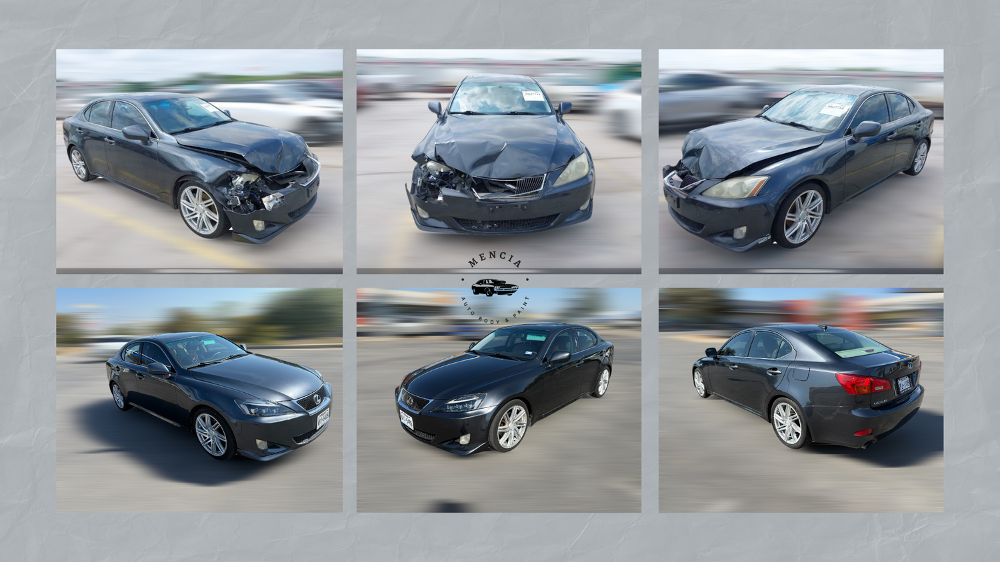
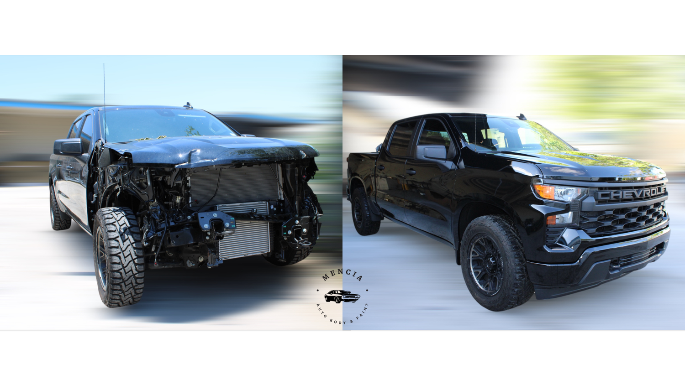
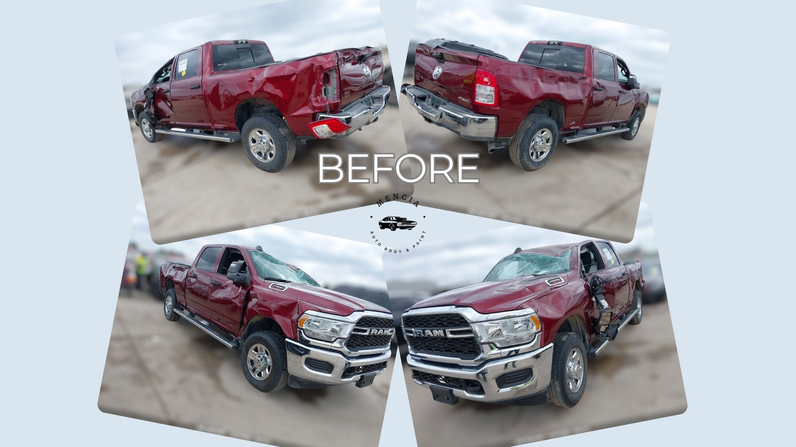
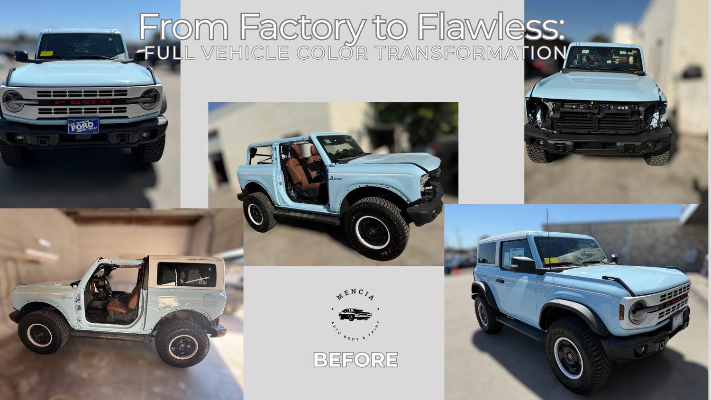
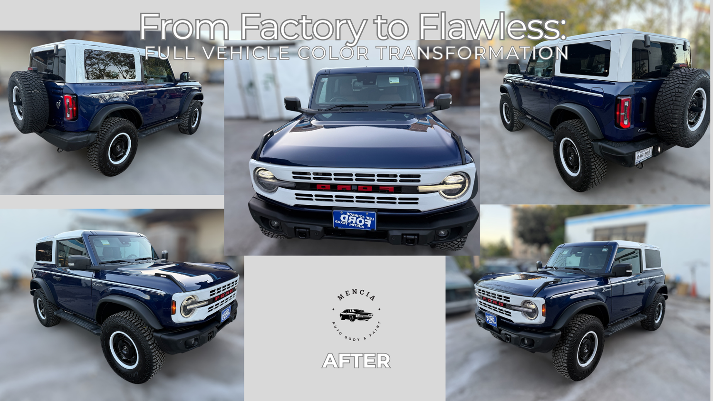
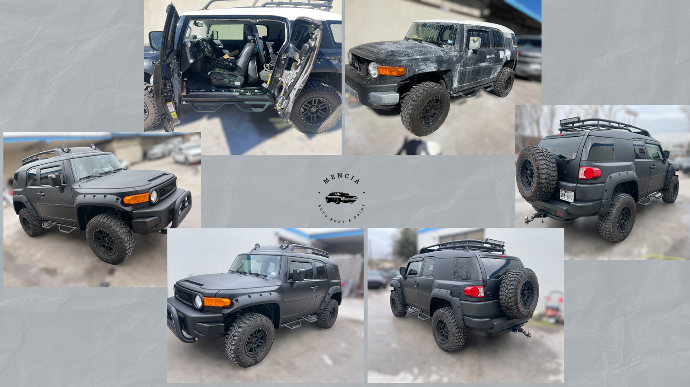

Free estimates
Detailed, no-obligation repair estimates with clear next steps before work begins.
Collision repair / paint / insurance claims
High-quality auto body repair and professional paint services in Austin, built around clear estimates, careful craftsmanship, and the kind of before-and-after work you can actually inspect.
Mencia handles everything from dents and scratches to major front-end damage, frame work, glass, hail repair, and full vehicle paint transformations. The promise is straightforward: explain the path, restore the vehicle, and make the result feel seamless.
The design leans into that promise with a proof-first layout: damaged panels, finished vehicles, insurance clarity, and direct contact routes are always close by.

Before damage. After detail.
Mencia's work is easiest to trust when the repair outcomes are visible immediately: damaged panels, refinished vehicles, clean lines, and the exact services people search for after an accident.
Services
Detailed, no-obligation repair estimates with clear next steps before work begins.
Minor accidents, major impacts, and front-end restoration handled with precision.
Dents, damaged panels, and structural issues repaired to restore fit and finish.
Custom paint, color matching, scratch repair, and refinish work for a clean result.
Paintless dent repair for dings where the original finish can be preserved.
Texas storm dents repaired efficiently so the vehicle can get back on the road.
Structural restoration after an accident, focused on vehicle safety and alignment.
Cracked or shattered auto glass replaced to restore security and visibility.
Claims support
Mencia says they accept all insurance plans and help customers navigate claim and self-pay options. The website turns that into a simple promise: bring the damage, bring the claim number if you have one, and leave with a repair path.
Start by emailDocument damage, repair needs, and the likely path forward.
Coordinate insurance details or quote the self-pay option plainly.
Body, frame, paint, glass, and quality checks move as one repair plan.
Return a clean, repaired vehicle with the finish visibly restored.
Showroom





Reviews
Collin Dodd praised the team for going beyond the accident repair, fair pricing, quick turnaround, and returning the car detailed.
Customer noteIsaiah Dao described two parking-lot hit-and-run repairs that came back looking better than new, with fast and responsive service.
Customer noteJanet Dietrich highlighted communication throughout the process, accommodating changes, reasonable pricing, and a refreshed Land Cruiser.
Customer noteGet a quote
Call the shop or email a few photos of the damage. The team can help with estimates, insurance questions, self-pay options, and the next step toward getting the vehicle repaired.
Monday-Friday
9:00am-6:00pm
Saturday
10:00am-2:00pm